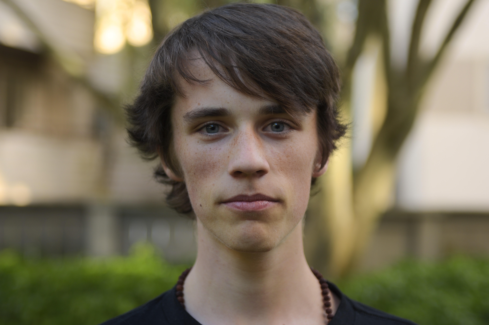

Talks on AI, sustainability, and the cost of the web.
I'm Gabriel Dalton — TEDx speaker, founder of Oasis of Change, and a young voice in digital sustainability. I speak about what technology actually costs us, and what we can do about it.
{kind=link}

Gabriel Dalton
Founder, Oasis of Change, Inc. · TEDx speaker · 2025 Impact & Innovation Award recipient
Gabriel Dalton was born on a boat and taught himself to code at ten. By the time he turns twenty, he will have spent half his life writing software. He's the founder of Oasis of Change, Inc., a Vancouver-based not-for-profit promoting digital sustainability and accessibility — and the person building the Vancouver Centre for AI Safety, Sustainability & Ethics (VCASSE), an Oasis of Change subsidiary focused on the responsible development and deployment of AI systems.
In 2025, Gabriel worked with Mayor Ken Sim and the City of Vancouver to officially proclaim Sustainable Technology Week, putting the environmental cost of the web on the civic agenda for the first time. He currently works with Plastic Bank to fight poverty and plastic pollution, and with AccessibilityChecker.org to improve digital accessibility. He's also worked with the Stanley Park Ecology Society and Mittler Senior Technology on projects that have reduced website carbon emissions, energy use, and water use by up to 98%.
He served as a National Coach (Fellow) with The Dais at Toronto Metropolitan University on their Screen Break program, Canada's first nationwide initiative for phone-free classrooms. He is a TEDx speaker on AI and digital sustainability, recipient of the 2025 Impact & Innovation Award, and an alumnus of The Knowledge Society (TKS).
Digital sustainability is heavily overlooked in mainstream tech conversations, and very few people his age are actively working in the field. Gabriel brings a perspective major events rarely get on stage.
What I speak about.
Six talks I'm comfortable giving — to corporate audiences, students, policymakers, and broader publics. Custom angles welcome.
Digital sustainability — the missing piece of tech literacy.
Why we can't have honest conversations about AI or technology without measuring what they cost — in carbon, water, attention, and trust.
AI safety, sustainability & ethics in practice.
From principles to product — what actually changes when sustainability and safety move upstream into how AI systems are built and deployed.
Being a young founder in tech.
What it's like building a not-for-profit before you can legally rent a car. How to take young people in tech seriously — and how young people can take themselves seriously.
Website development, performance & optimization.
How we've cut emissions, energy, and water use by up to 98% on real projects — and what teams can do tomorrow to ship lighter sites.
Digital accessibility & WCAG 2.2 in practice.
Beyond the checklist — what real accessibility looks like in shipping product, and why it overlaps so heavily with sustainability and good engineering.
Working on AI & LLM content.
How generative AI changes search, content, and trust — and what that means for the organizations who depend on being found.
Watch the TEDx talk.
Recorded at TEDx École Mission Secondary, February 2026 — a fifteen-minute argument that you can't have an honest conversation about AI without measuring what it costs.
Selected talks.
-
Feb 2026
Mission, BC
TEDx École Mission Secondary Watch ↗
-
Sep 2025
Toronto, ON
URL to IRL — Toronto Metropolitan University
-
Jun 2025
Vancouver, BC
Vancouver Emerging Technology Showcase
-
May 2025
Vancouver, BC
Web Summit (Inaugural)
-
Apr 2025
Vancouver, BC
BC Screen Time Roundtable
Booking 2026 speaking engagements.
Conferences, classrooms, corporate teams, policy roundtables — if it's a serious audience and a serious conversation, write me.